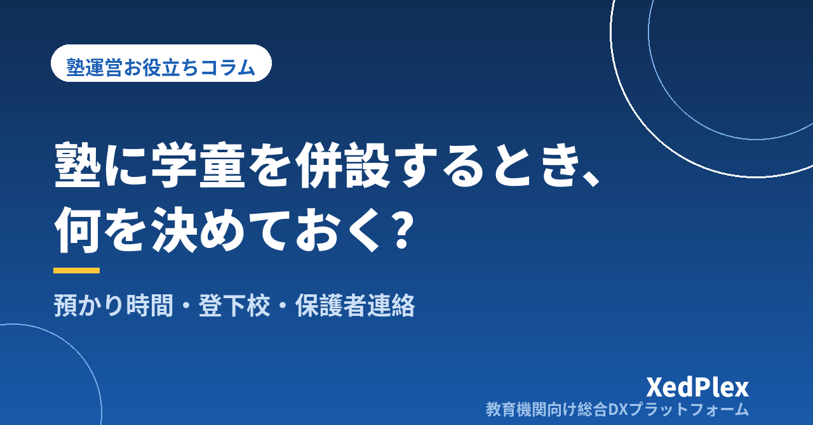

塾に学童（放課後の預かり）を併設するときの運営の整え方｜預かり時間・過ごし方・登下校の確認と保護者連絡を型にする

「授業が始まる前の時間、小学生を預かってもらえませんか」「学童が終わる時間までに迎えに行けなくて…」──。小学生の生徒が多い塾ほど、保護者からこうした相談を受けることがあります。昼間の教室が空いているなら、放課後の預かり（学童）を併設するのは自然な選択肢です。
一方で、学童は「勉強を教える場」である塾とは、求められるものが少し違います。保護者がいちばん気にするのは「子どもがちゃんと着いたか、安全に過ごしているか、何時に帰ったか」です。ここを場当たりで始めてしまうと、塾長がひとりで電話対応と見守りに追われ、肝心の授業準備の時間がなくなりかねません。この記事では、小さな塾が学童を併設するときに先に決めておくことと、毎日を回す運営の型を整理します。
学童の併設でつまずきやすい3つのこと
塾が預かりを始めたときに困りやすいのは、次の3つです。
- 授業と預かりの境目があいまい：預かりの時間に「ついでに勉強も見てほしい」と頼まれ、気づけば料金に含まれない個別指導をしている、という状態になりがちです。
- 「着いた・帰った」の確認が人の記憶頼み：学校から直接来る子、習い事を挟む子、お迎えの人が日によって違う子が混ざると、誰がいつ来て、誰と帰ったかを口頭や紙だけで追うのは難しくなります。
- 保護者からの連絡が一日中続く：「今日は休みます」「迎えが遅れます」「着きましたか」がそれぞれ電話や個人の連絡で届き、授業中にも対応に追われます。
どれも、始める前にルールを決め、確認と連絡を毎日同じ手順にすることで減らせます。
始める前に決めておく6つのこと
まずは、預かりの「枠」を決めます。保護者への案内や申込書にもそのまま使える形で書いておきましょう。
| 項目 | 決めておくことの例 |
|---|---|
| ①対象 | 学年（例: 小1〜小4）、塾生に限るか、塾生以外も受け入れるか |
| ②預かり時間と定員 | 開始・終了時刻、延長の可否と上限、学校の長期休み期間の扱い、1日の定員 |
| ③来かた・帰りかた | 学校から直接来るか、送迎をするか。お迎えに来られる人の範囲、子どもだけで帰ってよい条件 |
| ④過ごし方 | 宿題の時間、自由に過ごす時間、おやつの有無、持ち込んでよい物 |
| ⑤連絡のルール | 欠席・遅刻・迎えの変更の連絡方法と期限、到着や帰宅のお知らせの方法 |
| ⑥料金と申込 | 月額か利用回数ごとか、延長料金、長期休みの別料金、塾の月謝と一緒に請求するか |
おやつを出す場合は、食物アレルギーの有無を申込時に必ず確認し、出す物を事前にお知らせしておきます。持病や緊急時の連絡先も含め、子どもの健康に関わる情報の扱いは「塾で生徒が体調不良・けがをしたときの対応手順」も参考にしてください。
塾の授業と預かりの線引きをはっきりさせる
併設のよさは、預かりのあとにそのまま塾の授業へ移れることです。その一方で、線引きがないと「預かりの時間に教えるのが当たり前」になってしまいます。おすすめは、次のように時間と役割で分けておくことです。
| 預かり（学童） | 塾の授業 | |
|---|---|---|
| 目的 | 安全に過ごす・宿題を済ませる | 学力を伸ばす |
| 大人の関わり | 見守り、宿題の声かけ、分からないところの軽い手助け | 計画に沿った指導、確認テスト、指導記録 |
| 保護者への報告 | 到着・帰宅、その日の様子をひとこと | 学習の内容と次回の課題 |
| 料金 | 預かり料金 | 月謝（別に申し込み） |
「宿題の分からないところを聞かれたら、5分以内のヒントまで」「宿題以外の勉強をしっかり見てほしい場合は授業の申込を案内する」と決めておくと、スタッフによって対応が変わらず、保護者にも説明しやすくなります。預かりから授業への移行を希望する家庭には、体験授業の流れをそのまま使えます。
1日の流れを「型」にする
時間割の例
毎日の流れが決まっていると、子どもも落ち着き、スタッフも動きやすくなります。小学生の預かりなら、例えば次のような型が考えられます。
| 時間の目安 | 内容 | スタッフがすること |
|---|---|---|
| 到着〜15分 | 到着・手洗い・持ち物の片付け | 到着の記録と保護者へのお知らせ、来ていない子の確認 |
| 〜60分 | 宿題の時間 | 声かけ、終わった宿題の確認 |
| 〜15分 | おやつ・休憩 | アレルギーの確認、片付け |
| 残りの時間 | 読書・自由時間、または塾の授業へ移動 | 見守り、授業へ移る子の引き継ぎ |
| お迎え・帰宅 | 帰りの支度 | 引き渡し相手の確認、帰った時刻の記録とお知らせ |
※時間配分は一例です。学年や預かり時間に合わせて調整してください。
宿題の時間を「チェック表」で回す
宿題の時間は、子どもが自分で「今日やること」を確認し、終わったら印をつける形にすると、スタッフが一人ひとりに指示を出す手間が減ります。「音読・計算ドリル・漢字」のように毎日の項目を表にしておき、終わった項目を本人が記録する方法です。同じ考え方は「塾の宿題をやってこない生徒への対応」でも紹介しています。
登下校・入退室の確認と保護者への連絡
「来ていない」に早く気づく
学童でいちばん避けたいのは、来る予定の子が来ていないことに気づくのが遅れることです。次の3点をセットにしておきます。
- 今日来る予定の一覧を朝のうちに作る：曜日ごとの利用予定に、当日の欠席連絡を反映させます。
- 到着したらすぐ記録する：子ども自身がカードやQRコードをかざす、名前に印をつけるなど、毎回同じ方法で記録します。
- 到着予定時刻を過ぎても来ない子がいたら、保護者に連絡する：「何分過ぎたら連絡するか」を決めておき、誰が連絡するかも決めておきます。
欠席・遅れの連絡を電話だけで受けていると、授業中に取れなかった連絡が抜け落ちます。連絡の窓口を1つにまとめ、受付時間を決めておく考え方は「塾の欠席・振替管理のルール作りと運用」や「塾の保護者連絡、時間外の対応はどう決める？」で詳しく解説しています。
到着・帰宅のお知らせは自動にできると楽になる
保護者にとって、仕事中に「着きました」「〇時に帰りました」と分かるのは大きな安心です。ただ、毎日一人ずつ手作業で連絡するのは長続きしません。入退室の記録と同時に保護者へお知らせが届く仕組みにしておくと、スタッフの手間を増やさずに安心を届けられます。方法ごとの比較は「小さな塾でもできる入退室管理」を、記録の見せ方は「『ちゃんと通っているか』を保護者に見せる塾の仕組み」をご覧ください。送迎を行う場合の乗降確認と引き渡しのルールは「塾・学童の送迎、安全管理はどう整える？」にまとめています。
引き渡しのルール
お迎えの人が普段と違う場合は、保護者からの事前の連絡がなければ引き渡さないのが基本です。申込時に「お迎えに来られる人」を登録してもらい、変更があるときの連絡方法を決めておきます。子どもだけで帰る場合も、帰った時刻を記録し、保護者に分かるようにしておきましょう。
料金・申込と記録を塾の管理とつなげる
預かりの料金は、塾の月謝と別に管理すると集計が複雑になります。同じ名簿・同じ請求の流れで、項目だけを分けて請求する形にしておくと、兄弟で塾と預かりを利用している家庭にも分かりやすい請求になります。延長料金や長期休みの料金のように月によって変わる費用は、利用の記録から集計できるようにしておくと、請求のたびに数え直す必要がなくなります。項目の分け方は「塾の教材費・模試代・講習費の請求管理」、割引の扱いは「塾の兄弟割引・割引制度の決め方」が参考になります。
あわせて、その日の様子（宿題の進み具合、体調、気になったこと）をひとことずつ記録しておくと、保護者に聞かれたときにすぐ答えられ、塾の授業を担当する講師への引き継ぎにも使えます。記録の型は「塾の生徒記録（日誌）を残す習慣と活かし方」で紹介しています。
まとめ
塾に学童を併設するときは、対象・時間・来かたと帰りかた・過ごし方・連絡・料金の6つを先に決め、授業と預かりを時間と役割で分け、1日の流れと到着・帰宅の確認を毎日同じ手順にすることが、塾長ひとりでも無理なく続けるための土台になります。まずは今いる小学生の保護者に「何時から何時まで、どんな過ごし方なら利用したいか」を聞くところから始めてみてください。
この記事を書いた運営より
私たちは、個人経営・小規模の学習塾向けに、生徒管理・QRコードでの入退室記録・月次請求・保護者へのLINE/メール通知・AIによる学習支援までをひとつにまとめた教育機関向け総合DXプラットフォーム「XedPlex（ゼドプレックス）」を開発・提供しています。初期費用は0円、料金は生徒1名あたり月額300円（税込）から。生徒50名の塾なら月15,000円（税込）です。全国8つの教室で導入されており、導入塾には紹介ホームページの無料作成も行っています。機能の詳細説明はこちら。
XedPlexの詳細を見る